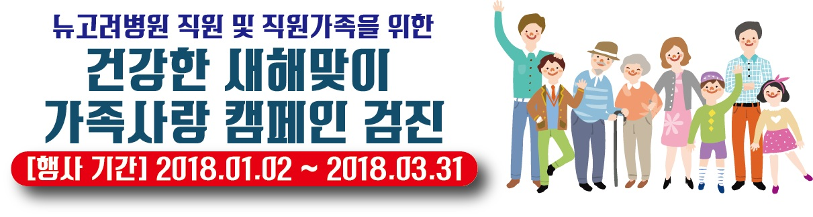

뉴고려병원 직원 및 가족을 위한 검진상품
유형선택
건강형 (
847,820
원 =>
25만원
)
소망형 (
1,067,820
원 =>
35만원
)
행복형 (
1,517,820
원 =>
45만원
)
사랑해 (
2,200,000
원 =>
99만원
)
공단검진대상은
공단비용은 별도 재정산
합니다.
선택검사
(공통)
소화기검사
선택 1개
1. 위내시경
2. 위수면내시경
특수초음파
혈관검사
1. 갑상선초음파
2. 경질초음파(여성전용)
3. 유방초음파(여성전용)
4. 전립선초음파(남성전용)
5. 경동맥초음파
6. 혈관협착도(ABI)
7. NK뷰키트
MDCT
및 대장내시경
9. QCT(골다공증)
10. 뇌CT
11. 폐CT
12. 요추CT
13. 경추CT
14. 심장MDCT(칼슘스코어)
15. 유전자검사(3종)
※ 대장수면내시경
MRI/MRA
a. 뇌MRA + 뇌MRI
b. 요추MRI
c. 경추MRI
d. 무릎MRI(한부위)
일정 및 개인정보 입력
희망 검진일
희망 검진시간
07시
08시
09시
10시
11시
12시
13시
14시
15시
16시
00분
15분
30분
45분
성명
연락처
직원 성명
직원 연락처
메모
개인정보 수집/이용 동의서
개인정보 수집/이용 동의서
"개인정보 보호법"에 따라 본인의 동의를 받아 검진 예약 상담을 진행하고자 합니다.
1. 개인정보 수집/이용 목적 : 검진 예약 및 상담
2. 개인정보 수집 항목 : 성명, 연락처, 추천인 성명, 추천인 연락처
3. 보유 및 이용기간 : 수검 완료 또는 상담 종료시
개인정보 수집/이용에 동의합니다.(선택)
동의
동의하지 않음
검진 예약하기